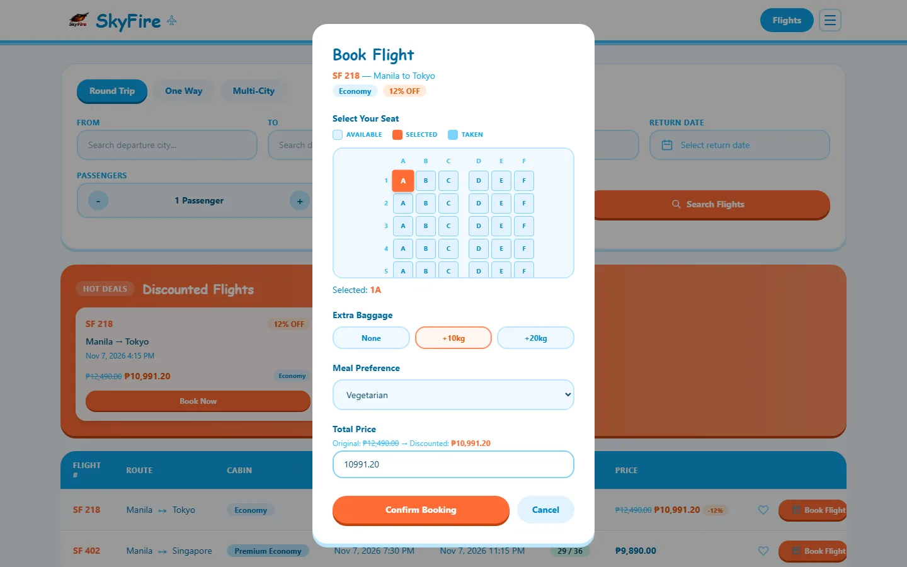
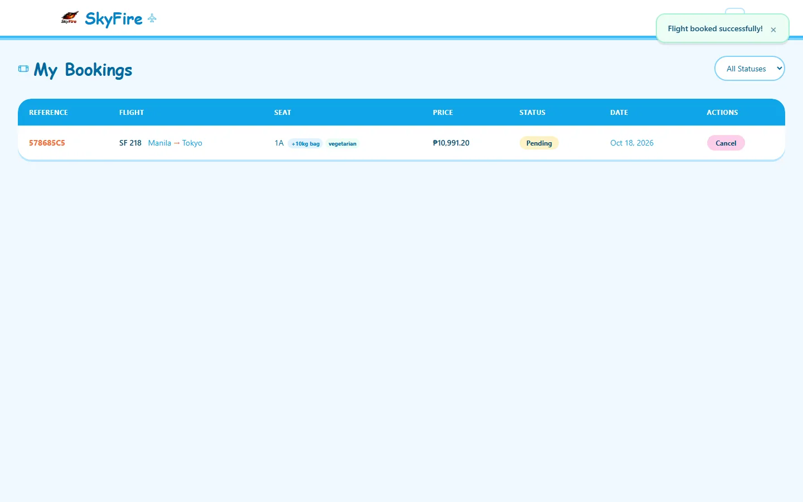

Project / Case study
SkyFire
A full-stack airline booking application covering flight discovery, seats, add-ons, and booking management.
SkyFire brings the reservation process into one flow: find a flight, choose a seat, add baggage or a meal, and review the total before confirming. The completed reservation appears in My Bookings with its reference, trip details, and booking status.
- Role
- Individual project · Full-stack development
- Built with
- Angular 21 · Django REST Framework · JWT · SQLite
Project walkthrough

Problem
Keep seat validation authoritative on the backend while carrying a user through a multi-step reservation flow.
An Angular booking client sends reservation requests to a Django API that validates and writes seat state inside transaction.atomic. The SQLite demo backend does not enforce SELECT FOR UPDATE row locks.
My contribution
Designed and built the Angular client, Django backend, reservation workflow, and a transaction.atomic seat-validation boundary that expresses lock intent with select_for_update.
Ownership boundary. Solo project designed and implemented by Jayrald.
Private solo repository. Source access is not offered publicly. The demo uses SQLite, so its select_for_update call documents the intended locking boundary without providing a row-lock guarantee.
How it works
-
Angular client
Guides search, seat choice, add-ons, confirmation, and booking review.
-
Django REST API
Validates authenticated booking requests and coordinates reservation state.
-
Transactional seat validation
Checks availability and writes the reservation inside one backend transaction boundary.
-
SQLite record
Persists the confirmed booking for the My Bookings view.
Engineering choices
| Decision | Why | Tradeoff |
|---|---|---|
| Put seat validation and the reservation write inside transaction.atomic, using select_for_update to express lock intent. | Availability must be checked by the backend at the point where the booking is written, rather than trusted from client state. | SQLite ignores SELECT FOR UPDATE, so the current demo cannot claim row-level conflict prevention; that guarantee requires a database backend that supports row locks. |
In use
Real capture of the working local booking flow, using seeded flights and a locally isolated account so no production customer data appears.
-
Search flights
Choose a flight: search controls, availability, cabin, and pricing stay together so the reservation starts with an explicit fare. -
Choose a seat

Configure the trip: the booking step carries the selected seat, baggage, meal, and calculated total in one reviewable state. -
Confirm booking

Confirm the reservation: the completed write returns a booking reference, seat, add-ons, price, and status in My Bookings.
Outcome
The local booking flow carries a selected flight, seat, and add-ons through to a confirmed reservation in My Bookings.
Evidence. The captured sequence shows flight selection, a configured booking, and the resulting reservation with its reference, seat, price, and status.
Current limits. The demonstration uses seeded flights and a local account. SQLite does not enforce SELECT FOR UPDATE row locks, so this demo does not establish protection against concurrent seat conflicts.